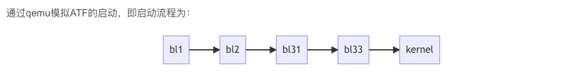
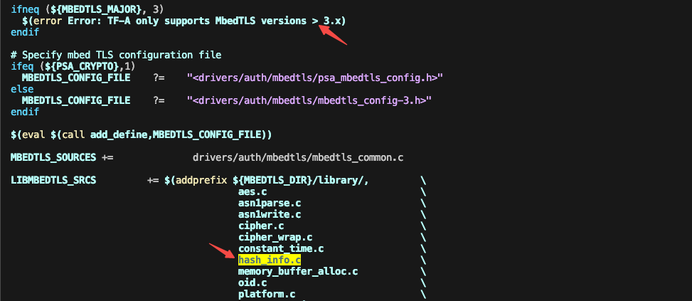
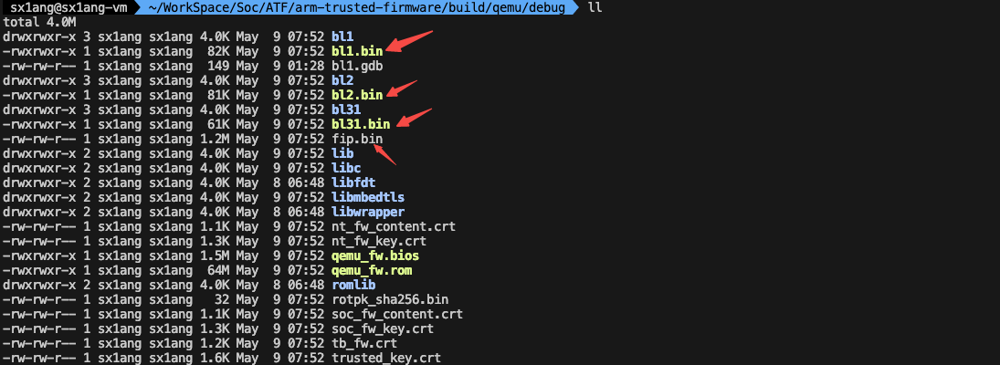
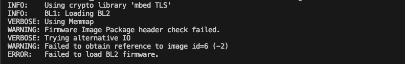
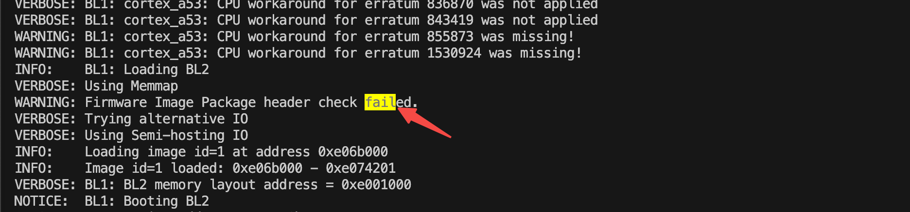
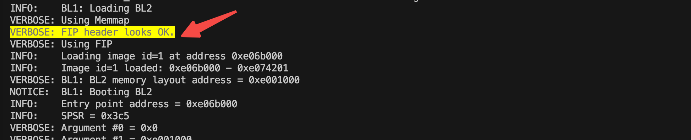
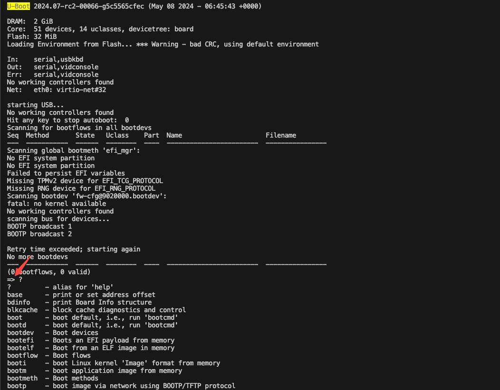
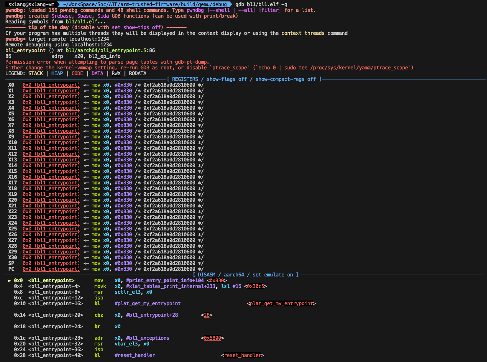
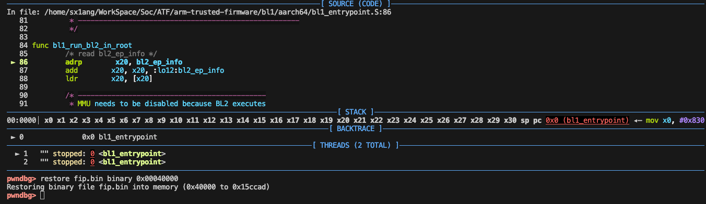

1. 调试环境搭建
动态调试能够更快速地分析代码的执行流程，本文编译qemu平台的ATF，搭建调试环境。
主机环境：Ubuntu22.04 AArch64

参考资料：https://blog.csdn.net/qq_16106195/article/details/126708271
1.1 qemu
qemu是固件的运行平台。建议源码编译安装，直接apt install qemu安装qemu版本比较低，后续会遇到问题。
参考：https://hlyani.github.io/notes/openstack/qemu_make.html
1.2 U-boot
启动过程中的bl33为u-boot，在编译时需要指定BL33为u-boot.bin。
1 | // 下载 |
编译完成之后在u-boot根目录下生成u-boot.bin镜像文件。
1.3 mbed TLS库
在安全启动过程中验证镜像需要使用mbedtls库。
1 | // 下载mbedtls |
**注意:**mbedtls在v3.6.0 v3.5.2 v3.5.1 v3.5.0 mbedtls-3.6.0 mbedtls-3.5.2 mbedtls-3.5.1 mbedtls-3.5.0版本中移除了hash_info模块，但是在新版本的atf代码中要求mbedtls版本为3.x，并且需要hash_info模块，建议使用mbedtls V3.4.0版本。
https://github.com/Mbed-TLS/mbedtls/issues/6993
https://github.com/Mbed-TLS/mbedtls/commit/13230a4ad3afd51bb935c23c908184f173c37c91
arm-trusted-firmware/drivers/auth/mbedtls/mbedtls_common.mk：

1.4 编译支持Trusted Board Boot的镜像
在ATF代码中默认不支持Trusted Board Boot功能，如果编译支持Trusted Board Boot的镜像，需要开启TRUSTED_BOARD_BOOT和GENERATE_COT编译选项。
1 | // 安装dtc依赖 |
如果开启TRUSTED_BOARD_BOOT和GENERATE_COT编译选项，需要指定mbedtls库源码路径，因为镜像验证需要依赖mbedtls库。ARM_ROTPK_LOCATION选项指定使用位于plat/arm/board/common/rotpk/arm_rotpk_rsa_sha256.bin 中的默认哈希值；当GENERATE_COT = 1时使用ROT_KEY选项，用于指定包含PEM格式的ROT私钥的文件，并强制生成公钥哈希。
编译完成之后在arm-trusted-firmware/build/qemu/debug目录下生成bl1.bin、bl2.bin、bl31.bin和fip.bin镜像：

fip.bin和bl1.bin、bl2.bin以及bl31.bin的关系：
- BL1 (Boot Loader Stage 1): BL1 是第一阶段的引导加载程序，也称为 bootROM。bl1固化在 SoC 的 ROM 中，并且是处理器启动后运行的第一个代码。BL1 的主要职责包括初始化处理器核心、设置内存控制器以及加载 BL2；
- FIP (Firmware Image Package): FIP 是一个封装容器，里面包含多个固件组件，如 BL2、BL30（引导加载程序的可选部分，用于初始化 GPU），BL31，BL32（安全引导可选部分，如 OP-TEE 等）和 BL33。
fip.bin文件是以上文件的打包版本，包含的镜像在设备引导过程中会被顺序加载； - 在启动时，ROM 代码（BL1）会先执行，然后加载
fip.bin中的其他组件，从而完成整个系统的引导过程。
参考：
https://trustedfirmware-a.readthedocs.io/en/v2.4/design/trusted-board-boot-build.html
https://www.cnblogs.com/arnoldlu/p/14301334.html
https://www.cnblogs.com/jianhua1992/p/16852776.html
1.5 qemu通过ATF加载u-boot
首先需要准备u-boot.bin镜像，然后使用qemu运行bl1.bin镜像，并由bl1加载bl2镜像，bl2加载bl31镜像，最后通过层层加载，启动bl33固件，即u-boot.bin。
新建文件夹atf_load_u-boot，拷贝bl1.bin、bl2.bin、bl31.bin到当前目录下，拷贝u-boot.bin到当前目录下并重命名为bl33.bin：
1 | mkdir atf_load_u-boot |
启动镜像：
1 | qemu-system-aarch64 \ |
直接使用上述命令启动镜像会出现如下报错：

需要在gdb调试环境下使用restore命令加载fip镜像到内存中，具体原因见《1.6 gdb调试目标镜像》。
1.6 gdb调试目标镜像
使用qemu通过FIP方式启动ATF：
1 | cd atf_load_u-boot |
-S：表示QEMU虚拟机会冻结CPU，直到远程的GDB输入相应控制命；
-s：表示在1234端口接受GDB的调试连接。
gdb附加调试并加载fip.bin镜像到内存：
1 | cd arm-trusted-firmware/build/qemu/debug/ |
1 | // 连接目标板 |
1 | sx1ang@sx1ang-vm > ~/WorkSpace/Soc/ATF/atf_load_u-boot > qemu-system-aarch64 \ |
注意：默认从memmap中以FIP方式加载镜像，如果memmap中没有镜像，就会打印Firmware Image Package header check failed. 即FIP校验头失败；这种情况下qemu会使用半主机的方式读取镜像Using Semi-hosting IO，直接半主机方式读取原始镜像到内存地址中（实际上是通过读文件的方式），即不会再校验FIP镜像的header。因此如果需要FIP方式加载镜像，需要提前将镜像加载到memmap中。在gdb调试环境中，可以使用gdb的restore命令将fip镜像加载到内存中。
1 | restore file binary start_addr end_addr |
开始地址是在ATF qemu平台的代码中配置的：
1 |

restore将镜像加载到内存之后再启动：

gdb detach之后会得到u-boot的shell：

gdb调试页面：


参考：
https://blog.csdn.net/a565499699/article/details/79294261
https://blog.csdn.net/zhangye3017/article/details/80382496
https://www.cnblogs.com/gnivor/p/15153133.html
https://liupzmin.com/2021/07/20/theory/stack-insight-02/
https://nanxiao.me/linux-pstack/